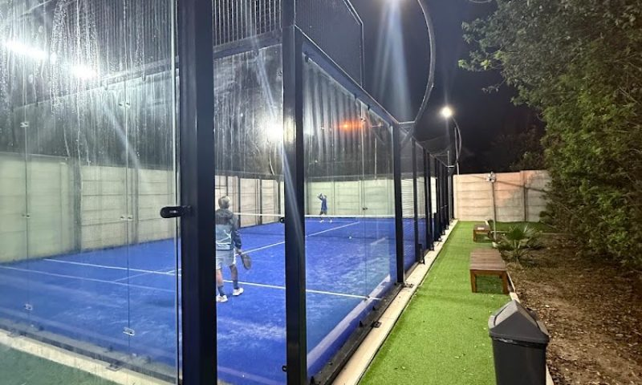
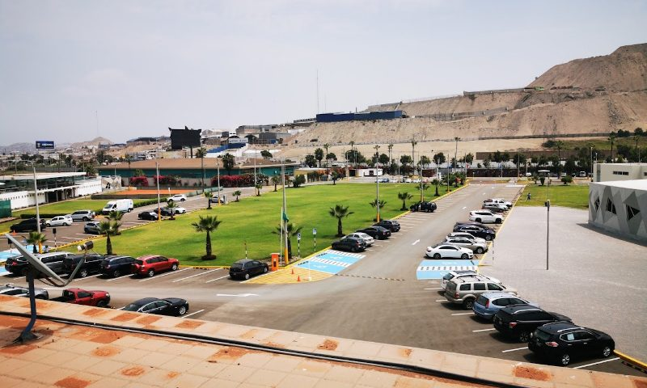

Foto: Google MapsDirectorio por distrito
Canchas de pádel en Chorrillos, Lima
3 canchas de pádel en Chorrillos con dirección, horario, tarifa estimada y contacto directo. Si no vives en Chorrillos, mira también el directorio completo de Lima o el catálogo filtrado e interactivo de Chorrillos, con reseñas, mapa y calificaciones.
 Foto: Google Maps
Foto: Google Maps
Peru Padel Center - Villa
HabilitadaChorrillos
perupadelcenter.com · @perupadelcenter
¿Eres el club? Actualiza tus datos
Foto: Google MapsClub de Regatas "Lima" - Filial Villa Deportiva
HabilitadaChorrillos
clubregatas.org.pe · @clubderegataslima
¿Eres el club? Actualiza tus datosEstas son las canchas de pádel que registramos en Chorrillos, con la dirección, el horario de atención y una tarifa estimada por hora de cada club — confirma siempre precio y disponibilidad real directo con el club antes de ir, porque esta información es pública y puede cambiar. Si no encuentras cancha disponible en Chorrillos, el directorio completo de Lima tiene más de 30 opciones en otros distritos, y en academiadepadel.pe dictamos clases de pádel para adolescentes y adultos, con clase de prueba y pala incluida.
Otros distritos con canchas de pádel
¿Buscas clases, no solo cancha?
En academiadepadel.pe enseñamos pádel a adolescentes y adultos en grupos reducidos, con clase de prueba disponible.
Quiero mi clase de prueba